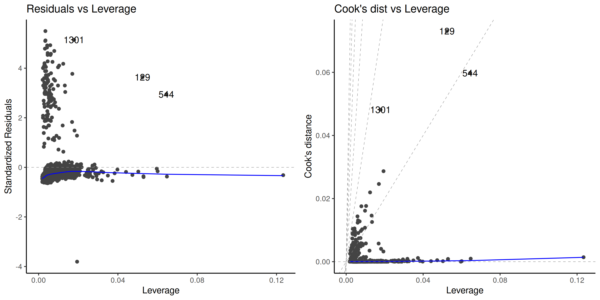

Statistical modelling
06. Linear models
2024
Model assumptions
There are four main assumptions of the linear model specification \[Y_i \mid \mathbf{x}_i \sim \mathsf{normal}(\mathbf{x}_i\boldsymbol{\beta}, \sigma^2).\]
- linearity and additivity: the mean of \(Y_i \mid \mathbf{x}_i\) is \(\beta_0 + \beta_1x_{i1} + \cdots + \beta_p x_{ip}\).
- homoscedasticity: the error variance \(\sigma^2\) is constant
- independence of the errors/observations conditional on covariates
- normality
Read the fine prints
Our strategy is to create graphical diagnostic tools or perform hypothesis tests to ensure that there is no gross violation of the model underlying assumptions.
- When we perform an hypothesis test, we merely fail to reject the null hypothesis, either because the latter is true or else due to lack of evidence.
- The same goes for checking the validity of model assumptions.
- Beware of over-interpreting diagnostic plots: the human eye is very good at finding spurious patterns…
Assumption 1 - mean model specification
The mean is \[\mathsf{E}(Y_i \mid \mathbf{x}_i)=\beta_0 + \beta_1x_{i1} + \cdots + \beta_p x_{ip}.\]
Implicitly,
- All interactions are included.
- There are no omitted explanatories from the model,
- The relationship between \(Y_i\) and \(X_j\) is linear.
- The effect is additive.
Diagnostic plots for linearity
Use ordinary residuals \(\boldsymbol{e}\), which are uncorrelated with fitted values \(\widehat{\boldsymbol{y}}\) and explanatory variables (i.e., columns of \(\mathbf{X}\)).
- Plots of residuals \(\boldsymbol{e}\) against fitted values \(\widehat{\boldsymbol{y}}\)
- Plot of residuals \(\boldsymbol{e}\) against columns from the model matrix, \(\mathbf{X}\)
- Plot of residuals \(\boldsymbol{e}\) against omitted variables
Any local pattern or patterns (e.g., quadratic trend, cycles, changepoints, subgroups) are indicative of misspecification of the mean model.
Use local smoother (GAM or LOESS) to detect trends.
Examples of residual plots
Look for pattern in the \(y\)-axis, not the \(x\)-axis!
Figure 1: Scatterplots of residuals against fitted values. The first two plots show no departure from linearity (mean zero). The third plot shows a clear quadratic pattern, suggesting the mean model is misspecified. Note that the distribution of the fitted value need not be uniform, as in the second panel which shows more high fitted values.
Examples
Figure 2: Scatterplot of residuals against explanatory (left) and an omitted covariate (right). We can pick up a forgotten interaction between BMI and smoker/obese and a linear trend for the number of children.
Examples for the college data

Remedy for mean model specification
Fix the mean model
- Add covariates that are important explanatories
- Include interactions if necessary
- For residual patterns, specify the effect of nonlinear terms via penalized splines
- Transformations
Assumption 2: homoscedasticity (equal variance)
The variance is the same for all observations, \(\mathsf{Va}(Y_i \mid \mathbf{x}_i) = \sigma^2\)
Typical heteroscedasticity patterns arise when
- Variance varies per levels of a categorical variable
- Variance increases with the response (typically multiplicative models)
- Data are drawn from a distribution whose variance depends on the mean, e.g., Poisson
Diagnostic for equal variance
Use externally studentized residuals \(r_i\), which have equal variance.
Hypothesis tests:
- Levene test (fit ANOVA to \(|r_{ij} - \overline{r_{j}}|\) as a function of group index \(j \in \{1, \ldots, J\}\))
- Breusch–Pagan test (popular in economics, fits linear regression to \(e_i^2\))
- Bartlett test (normal likelihood ratio test for different variance, but very sensitive to normality assumption so not recommended)
Graphical diagnostics
- Plot (absolute value of) \(r_i\) against fitted values (spread-level plot)
Examples of spread level plots
Figure 3: Plot of externally studentized residuals against fitted value (left) and categorical explanatory (right). Both clearly display heteroscedasticity.
Heteroscedasticity tests for college data
# Extract externally studentized residuals
r <- rstudent(linmod.college1)
# Levene test (F-test for ANOVA)
car::leveneTest(r ~ rank, center = "mean", data = college)
## Levene's Test for Homogeneity of Variance (center = "mean")
## Df F value Pr(>F)
## group 2 50 <2e-16 ***
## 394
## ---
## Signif. codes: 0 '***' 0.001 '**' 0.01 '*' 0.05 '.' 0.1 ' ' 1
# Breusch-Pagan (with a score test)
car::ncvTest(linmod.college1, var.formula = ~ rank)
## Non-constant Variance Score Test
## Variance formula: ~ rank
## Chisquare = 70, Df = 2, p = 6e-16Consequences of unequal variance
Figure 4: Histogram of the null distribution of \(p\)-values obtained through simulation using the two-sample \(t\)-test (left) and Welch’s \(t\)-test (right), based on 10 000 simulations. Each simulated sample consist of 50 observations from a \(\mathsf{normal}(0, 1)\) distribution and 10 observations from \(\mathsf{normal}(0, 9)\). The uniform distribution would have 5% in each of the 20 bins used for the display.
Remedy 1 - specify the variance structure
Specify a function for the variance, e.g.,
- \(\sigma_j\) for level \(j\) of a categorical variable,
- \(\sigma^2(\boldsymbol{v}_i) = g(\boldsymbol{v}_i; \boldsymbol{\theta})\) for some suitable transformation \(g(\cdot): \mathbb{R} \to (0, \infty)\), some covariate vector \(\boldsymbol{v}\) and parameter \(\boldsymbol{\theta}\).
A model specification enables the use of likelihood ratio tests.
The model can be fitted via restricted maximum likelihood using the function gls from package nlme.
Example of heteroscedasticity for the college data
For the college data, we set \(Y_i \sim \mathsf{normal}(\mathbf{x}_i\boldsymbol{\beta}, \sigma^2_{\texttt{rank}_i})\) with three different variance parameters. This seemingly corrects the heteroscedasticity.
Group heteroscedasticity in ANOVA
The t.test and oneway.test functions in R perform hypothesis test for equality of mean: for observation \(i\) from group \(j\), the model specified is
\[Y_{ij} \sim \mathsf{normal}(\mu_j, \sigma^2_j).\] These tests are often labelled by software under the name of Welch (1947).
There is no exact expression for the null distribution for equal variance, but approximations due to Satterthwaite (1946) are used as benchmarks.
We need enough people in each subgroup to reliably estimate both the mean and variance!
Remedy 2 - use a sandwich matrix for the errors
Economists often use sandwich estimators (White 1980), whereby we replace the estimator of the covariance matrix of \(\widehat{\boldsymbol{\beta}}\), usually \(S^2(\mathbf{X}^\top\mathbf{X})^{-1}\), by a sandwich estimator of the form
\[\widehat{\mathsf{Va}}_{\mathsf{HCE}}(\boldsymbol{\widehat{\beta}}) = (\mathbf{X}^\top\mathbf{X})^{-1}\mathbf{X}^\top\boldsymbol{\Omega}\mathbf{X}(\mathbf{X}^\top\mathbf{X})^{-1}\] with \(\boldsymbol{\Omega}\) a diagonal matrix.
Popular choices are heteroscedastic consistent matrices (MacKinnon and White 1985), e.g., taking \(\mathrm{diag}(\boldsymbol{\Omega})_i = e_i^2/(1-h_{ii})^2\), the so-called HC\({}_3\).
Example of sandwich matrix
Replace \(\mathsf{Va}(\widehat{\boldsymbol{\beta}})\) by \(\widehat{\mathsf{Va}}_{\mathsf{HCE}}(\boldsymbol{\widehat{\beta}})\) in the formula of Wald tests.
vcov_HCE <- car::hccm(linmod.college1)
# Wald tests with sandwich matrix
w <- coef(linmod.college1) / sqrt(diag(vcov_HCE))
# Variance ratios
diag(vcov_HCE) / diag(vcov(linmod.college1))
## (Intercept) rankassociate rankfull fieldtheoretical
## 0.27 0.29 0.62 0.99
## sexwoman service years
## 0.41 2.19 1.76
# Compute p-values
pval <- 2*pt(abs(w),
df = linmod.college1$df.residual,
lower.tail = FALSE)Multiplicative structure
Multiplicative data of the form \[\begin{align*} \left(\begin{matrix} \text{moyenne $\mu$}\end{matrix}\right) \times \left(\begin{matrix} \text{random error} \end{matrix}\right) \end{align*}\] tend to have higher variability when the response is larger.
Remedy 3 - Variance-stabilizing transformations
A log-transformation of the response, \(\ln Y\), makes the model additive, assuming \(Y > 0\).
Write the log-linear model \[\begin{align*} \ln Y = \beta_0+ \beta_0 +\beta_1 X_1 +\cdots + \beta_pX_p + \varepsilon \end{align*}\] in the original response scale as \[\begin{align*} Y &= \exp\left(\beta_0 +\beta_1 X_1 +\cdots + \beta_pX_p\right)\cdot \exp(\varepsilon), \end{align*}\] and thus \[\begin{align*} \mathsf{E}(Y \mid \mathbf{X}) = \exp(\beta_0 +\beta_1 X_1 +\cdots + \beta_pX_p) \times \mathsf{E}\{\exp(\varepsilon) \mid \mathbf{X}\}. \end{align*}\]
Lognormal model
If \(\varepsilon \mid \mathbf{x} \sim \mathsf{normal}(\mu,\sigma^2)\), then \(\mathsf{E}\{\exp(\varepsilon) \mid \mathbf{x}\}= \exp(\mu+\sigma^2/2)\) and \(\exp(\varepsilon)\) follows a log-normal distribution.
An increase of one unit of \(X_j\) leads to a \(\beta_j\) increase of \(\ln Y\) without interaction or nonlinear term for \(X_j\), and this translates into a multiplicative increase of a factor \(\exp(\beta_j)\) on the original data scale for \(Y\).
- If \(\beta_j=0\), \(\exp(\beta_j)=1\) and there is no change
- If \(\beta_j < 0\), \(\exp(\beta_j)<1\) and the mean decreases with \(X_j\)
- If \(\beta_j > 0\), \(\exp(\beta_j)>1\) and the mean increases with \(X_j\)
Interpretation of log linear models
Compare the ratio of \(\mathsf{E}(Y \mid X_1=x+1)\) to \(\mathsf{E}(Y \mid X_1=x)\), \[\begin{align*} \frac{\mathsf{E}(Y \mid X_1=x+1, X_2, \ldots, X_p)}{\mathsf{E}(Y \mid X_1=x, X_2, \ldots, X_p)} = \frac{\exp\{\beta_1(x+1)\}}{\exp(\beta_1 x)} = \exp(\beta_1). \end{align*}\] Thus, \(\exp(\beta_1)\) represents the ratio of the mean of \(Y\) when \(X_1=x+1\) in comparison to that when \(X_1=x\), ceteris paribus (and provided this statement is meaningful).
The percentage change is
- \(1-\exp(\beta_j)\) if \(\beta_j <0\) and
- \(\exp(\beta_j)-1\) if \(\beta_j>0\).
More general transformations
Consider the case where both \(Y\) and \(X_1\) is log-transformed, so that \[\begin{align*} Y= X_1^{\beta_1}\exp(\beta_0 + \beta_2X_2 + \cdots + \beta_pX_p + \varepsilon) \end{align*}\] Taking the derivative of the left hand side with respect to \(X_1>0\), we get \[\begin{align*} \frac{\partial Y}{\partial X_1}&= \beta_1 X_1^{\beta_1-1}\exp(\beta_0 + \beta_2X_2 + \cdots + \beta_pX_p + \varepsilon)= \frac{\beta_1 Y}{X_1} \end{align*}\] and thus we can rearrange the expression so that \[\begin{align*} \frac{\partial X_1}{X_1}\beta_1 = \frac{\partial Y}{Y}; \end{align*}\] this is a partial elasticity, so \(\beta_1\) is interpreted as a \(\beta_1\) percentage change in \(Y\) for each percentage increase of \(X_1\), ceteris paribus.
Independence assumption
Follows from sampling scheme (random sample), need context to infer whether this assumption holds.
Typical violations include
- repeated measures (correlated observations).
- longitudinal data: repeated measurements are taken from the same subjects (few time points)
- time series: observations observed at multiple time periods
- spatial data
Consequences of dependence
Nearby things are more alike, so the amount of ‘new information’ is smaller than the sample size.
When observations are positively correlated, the estimated standard errors reported by the software are too small.
This means we are overconfident and will reject the null hypothesis more often then we should if the null is true (inflated Type I error, or false positive).
Consequences of correlated data

Figure 5: Percentage of rejection of the null hypothesis for the \(F\)-test of equality of means for the one way ANOVA with data generated with equal mean and variance from an equicorrelation model (within group observations are correlated, between group observations are independent). The nominal level of the test is 5%.
Fixes for group structure and autocorrelation
Chapter 6 will deal with correlated data
The main idea is to assume instead that \[\boldsymbol{Y} \mid \mathbf{X} \sim \mathsf{normal}_n(\mathbf{X}\boldsymbol{\beta}, \boldsymbol{\Sigma})\] and model explicitly the \(n \times n\) variance matrix \(\boldsymbol{\Sigma}\), parametrized in terms of covariance parameters \(\boldsymbol{\psi}\).
Time series and longitudinal data
For time series, we can look instead at a correlogram, i.e., a bar plot of the correlation between two observations \(h\) units apart as a function of the lag \(h\).
For \(y_1, \ldots, y_n\) and constant time lags \(h=0, 1, \ldots\) units, the autocorrelation at lag \(h\) is (Brockwell and Davis 2016, Definition 1.4.4) \[\begin{align*} r(h) = \frac{\gamma(h)}{\gamma(0)}, \qquad \gamma(h) = \frac{1}{n}\sum_{i=1}^{n-|h|} (y_i-\overline{y})(y_{i+h} - \overline{y}) \end{align*}\]
Example of correlogram
Figure 6: Correlogram of independent observations (left) and the ordinary residuals of the log-linear model fitted to the air passengers data (right). While the mean model of the latter is seemingly correctly specified, there is residual dependence between monthly observations and yearly (at lag 12). The blue lines give approximate pointwise 95% confidence intervals for white noise (uncorrelated observations).
Normality assumption
Without doubt the least important assumption.
Ordinary least squares are best linear unbiased estimators (BLUE) if the data are independent and the variance is constant, regardless of normality.
They are still unbiased and consistent if the variance is misspecified.
Tests for parameters are valid provided that each coefficient estimator is based on a sufficient number of observations.
- watch out for interactions with categorical variables (small subgroups).
Quantile-quantile plots
Produce Student quantile-quantile plots of externally studentized residuals \(R_i \sim \mathsf{Student}(n-p-2)\).
Figure 7: Histogram (left) and Student quantile-quantile plot (right) of the externally studentized residuals. The left panel includes a kernel density estimate (black), with the density of Student distribution (blue) superimposed. The right panel includes pointwise 95% confidence bands calculated using a bootstrap.
Interpretation of quantile-quantile plots
Figure 8: Quantile-quantile plots of non-normal data, showing typical look of behaviour of discrete (top left), heavy tailed (top right), skewed (bottom left) and bimodal data (bottom right).
Remedy for normality
- If data arise from different families (Poisson or negative binomial counts, binomial data for proportions and binary, etc.), use generalized linear models.
- Box–Cox type transformations
Box–Cox transformation
For strictly positive data, one can consider a Box–Cox transformation, \[\begin{align*} y(\lambda)= \begin{cases} (y^{\lambda}-1)/\lambda, & \lambda \neq 0\\ \ln(y), & \lambda=0. \end{cases} \end{align*}\] The cases
- \(\lambda=-1\) (inverse),
- \(\lambda=1\) (identity) and
- \(\lambda=0\) (log-linear model)
are perhaps the most important because they yield interpretable models.
Inference for Box–Cox models
If we assume that \(\boldsymbol{Y}(\lambda) \sim \mathsf{normal}(\mathbf{X}\boldsymbol{\beta}, \sigma^2 \mathbf{I}_n)\), then the likelihood is \[\begin{align*} L(\lambda, \boldsymbol{\beta}, \sigma; \boldsymbol{y}, \mathbf{X}) &= (2\pi\sigma^2)^{-n/2} J(\lambda, \boldsymbol{y}) \times\\& \quad \exp \left[ - \frac{1}{2\sigma^2}\{\boldsymbol{y}(\lambda) - \mathbf{X}\boldsymbol{\beta}\}^\top\{\boldsymbol{y}(\lambda) - \mathbf{X}\boldsymbol{\beta}\}\right], \end{align*}\] where \(J\) denotes the Jacobian of the Box–Cox transformation, \(J(\lambda, \boldsymbol{y})=\prod_{i=1}^n y_i^{\lambda-1}\).
Profiling \(\lambda\)
For each given value of \(\lambda\), the maximum likelihood estimator is that of the usual regression model, with \(\boldsymbol{y}\) replaced by \(\boldsymbol{y}(\lambda)\).
The profile log likelihood for \(\lambda\) is \[\begin{align*} \ell_{\mathsf{p}}(\lambda) = -\frac{n}{2}\ln(2\pi \widehat{\sigma}^2_\lambda) - \frac{n}{2} + (\lambda - 1)\sum_{i=1}^n \ln(y_i) \end{align*}\]
Box–Cox transform for the poison data
Box and Cox (1964) considered survival time for 48 animals based on a randomized trial. The poisons data are balanced, with 3 poisons were administered with 4 treatments to four animals each.
We could consider a two-way ANOVA without interaction, given the few observations for each combination. The model would be of the form \[\begin{align*} Y &= \beta_0 + \beta_1 \texttt{poison}_2 + \beta_2\texttt{poison}_3 +\beta_3\texttt{treatment}_2 \\ &\qquad+ \beta_4\texttt{treatment}_3 +\beta_5\texttt{treatment}_4 + \varepsilon \end{align*}\]
Diagnostic plots for poison data
Figure 9: Diagnostic plots for the poison data: ordinary residuals (jittered) for the linear model for survival time as a function of poison and treatment and fitted values against residuals.
Profile plot
The profile log likelihood for the Box–Cox transform parameter, suggests a value of \(\lambda=-1\) would be within the 95% confidence interval.
Model with transformation
The reciprocal response \(Y^{-1}\) corresponds to the speed of action of the poison depending on both poison type and treatment.
The diagnostics plot for this model show no residual structure.
Diagnostics for outliers
Outliers can impact the fit, the more so if they have high leverage.
Plot the Cook distance \(C_i\) as a function of the leverage \(h_{ii}\), where \[\begin{align*} C_i=\frac{r_i^2h_{ii}}{(p+1)(1-h_{ii})}. \end{align*}\]
Diagnostic plots for the insurance data
Figure 10: Diagnostic plots for outliers.
Remedies for outliers
- Remove them (not recommended)
- Use robust regression, which automatically downweights observations
Robust regression is less efficient (higher std. errors), but more robust to outliers.
The theory of robust statistics beyond the scope of the course.
References

Comment about transformations
We cannot compare models fitted to \(Y_i\) versus \(\ln Y_i\) using, e.g., information criteria or test, because models have different responses.
We can use however the Box–Cox likelihood, which includes the Jacobian of the transformation, to assess the goodness of fit and compare the model with \(\lambda=0\) versus \(\lambda=-1\).